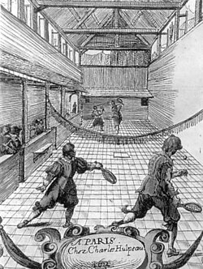
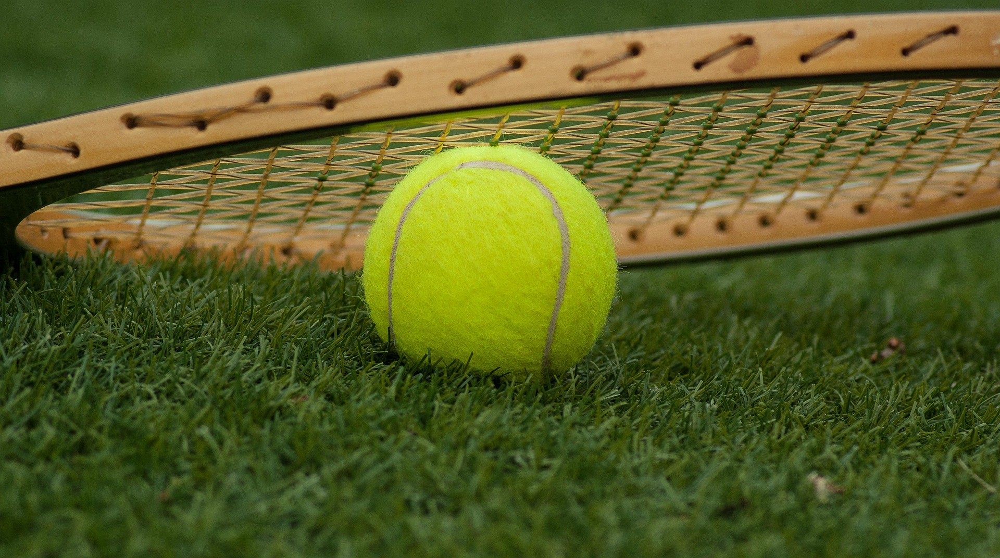
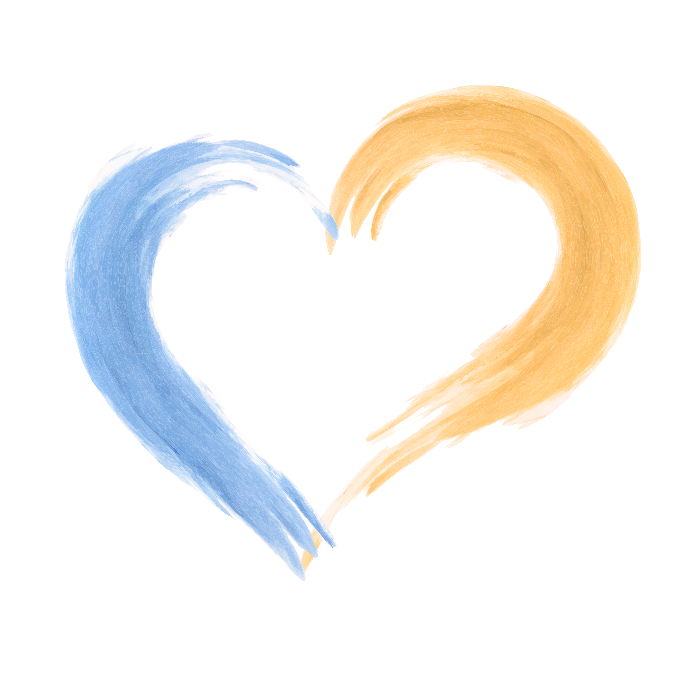

Early History
Tennis has a long history, but the birth of the game played today is thought to have taken place in England. The earliest recognisable relative to tennis, as we know it, was "jeu de paume", played in 11th century France. Played in a monastery courtyard, the game used the walls and sloping roofs as part of the court and the palm of the hand to hit the ball.
By the late 19th century, the popularity of lawn tennis had overtaken croquet in England. For this reason, the All England Croquet Club embraced the sport and designated certain croquet lawns to be used for tennis. It was this natural supply of venues combined with the already existing framework for a racquet game that resulted in the birth of the modern game in England. In 1913, lawn tennis was becoming increasingly popular worldwide. Therefore, it seemed natural that the existing National Tennis Associations should join forces to ensure the game was uniformly structured. The International Lawn Tennis Federation (ILTF) was created to oversee the development of the sport globally. An international conference was held between 12 nations in Paris and the International Lawn Tennis Federation (ILTF) was created.

Olympics
Tennis has a long Olympic history but withdrew from the programme after 1924. It did not return as a medal sport until 1988. Professionals are now welcome to compete, and the Olympic competition includes men's and women's singles, men's and women's doubles and mixed doubles, the last of which was added in 2012.
Old tennis rackets were made of wood and were quite heavy. They had a much smaller head than modern rackets, and the strings were made of gut, which was more expensive and less durable than today's synthetic strings.

Fun thing to know
Long ago, tennis adopted a unique scoring system - win one point and you get 15, two you have 30, three is 40. When you win that fourth point, it is game. Zero is known as love, which - the most prevalent theory claims - comes from the French word l’oeuf, meaning egg - or the shape of zero - which the English mis-heard as... "love."
